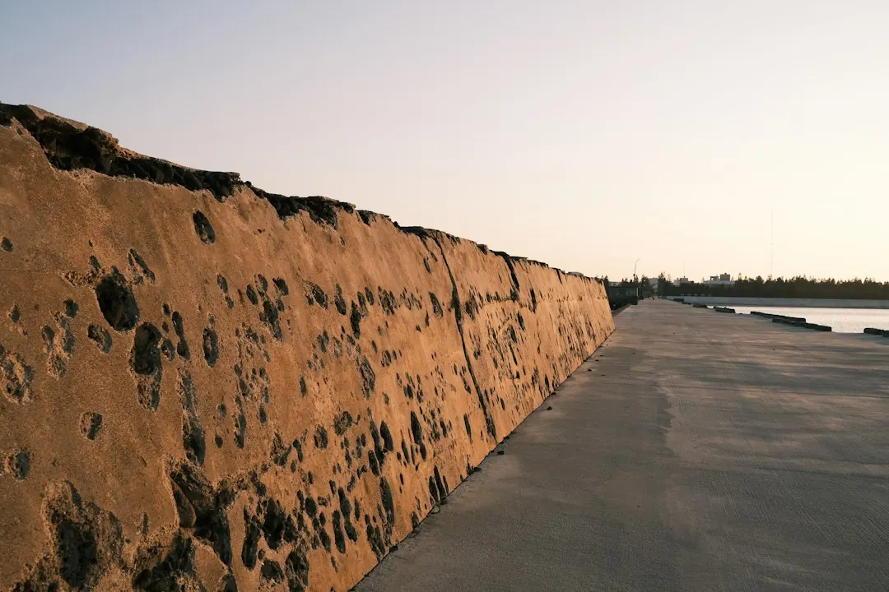

Perth landscaping decisions are shaped by sandy coastal soil, long hot summers, rostered watering days, site access and the type of outdoor space being changed. The source guide lists eight service areas, covers more than 15 northern suburbs, and recommends an itemised written quote before work begins. Confirm whether you need design first, identify slope and buried rubble, then compare planting, lawn, paving, decking, retaining and reticulation choices for the site.
For homeowners comparing retaining walls perth options, the practical questions are ground conditions, access, drainage, wall purpose and how the finished structure will fit the wider garden.
Retaining Walls Perth Explained
Landscaping Perth decisions begin with the ground under the proposed wall. The published Perth guide describes pale coastal sand that drains quickly and holds few nutrients, while sloping blocks may need limestone retaining. Before comparing designs, record the change in level, the length of the proposed wall, nearby paths or garden beds, vehicle access and whether old lawn, rubble or other material needs removal.
A retaining element should be considered as part of the whole outdoor layout rather than as an isolated line. Paving, planting, lawn, decking, screening and access can all affect the usable result. Ask whether the work is intended to level a garden, define a boundary, support a path or sit beside another improvement. Those answers give a contractor better information than a request for a wall without dimensions or photographs.
- Photograph the slope from both sides.
- Mark areas where machinery or materials may have limited access.
- Note existing paving, trees, services, rubble and changes in ground level.
Choose the wider project before the wall detail
The source guide separates whole-garden, front-yard, backyard, pool, courtyard, paving and landscaping work. That sequence is useful when a wall is only one part of the job. A front garden may combine paths, driveway edges, native planting and limestone walls. A backyard may need lawn or artificial grass, decking, shade and privacy. A pool surround may bring plants, paving, decking, screening and lighting into the same plan.
Small spaces need a different conversation. Courtyards, villas and side strips have less room for movement and planting, so ask how the wall will affect circulation, maintenance and the sense of space. If the project includes paving or levelling, request a combined explanation of levels, edges and garden beds. This helps reveal whether separate elements have been planned together or simply added one at a time.
For wider planning context, the guide to Perth landscaping services and outdoor project choices can help frame the questions before you seek a detailed quote.
Understand the Perth cost drivers
The published guide identifies several factors that can move a landscaping price up or down: soil improvement on sandy ground, retaining on sloping blocks, site access, old lawn removal and buried builders' rubble. New reticulation can also add to the job. These are useful quote prompts because they describe the conditions that may change the amount of preparation, excavation, removal or construction involved.
Ask for each major allowance to be visible in an itemised written quote. The document should make clear what preparation is included, whether removal is included, how access limitations are handled and which parts relate to the wall rather than planting or paving. If an hourly rate is proposed for a small tidy-up or planting day, ask how unexpected ground conditions will be handled. For larger construction work, ask how any hourly charges will be capped.
Do not compare two totals without checking their scope. One may include soil improver, mulch, levelling or removal while another may leave those items open. A short site description and current photographs make the comparison more useful.
Check planting, water and verge boundaries
Perth's long, hot and dry summers make planting and watering part of the retaining-wall conversation. The guide notes that sandy ground dries out quickly, and that soil improvers, thick mulch and WA native planting can help new gardens establish. It also points to efficient reticulation and planting suited to water-wise use. Ask how the wall, soil preparation and garden beds will work together rather than treating planting as an afterthought.
Autumn or winter planting lets rainfall help new plants settle before summer, according to the published questions and answers. That is a planning consideration for a garden makeover, but it does not replace a site-specific planting plan. Discuss sun, shade, coastal exposure, maintenance expectations and the amount of lawn or planting you actually want to keep.
Verge work needs a separate check. Street verges are public land and councils can set limits on planting, mulch and reticulation. Confirm the rules for the relevant area before including a verge wall, edging, paving or irrigation in the brief.
Prepare the enquiry and review the quote
A useful enquiry states the suburb, job type, property area and the work already identified. Include photographs, notes about slope and access, and whether the request concerns a whole garden, front yard, backyard, pool surround, courtyard, paving project or verge. The published enquiry process asks for suburb, job type, photos or notes, and property area.
Decide whether you want a design first or a contractor to plan and build in one go. A full design may suit a larger space or unsettled ideas, while a more direct planning approach may suit a defined job. State priorities such as low upkeep, native planting, lawn, artificial grass, decking, shade, privacy, paving or retaining.
- Describe the space and the change in level.
- Attach clear photographs and identify access constraints.
- List the surrounding work that must coordinate with the wall.
- Request an itemised written quote before work starts.
- Describe the site. Record the slope, dimensions, property area, access points and nearby paving, planting or structures.
- Set the brief. Choose the outdoor space and state priorities such as low upkeep, lawn, native planting, decking, paving or privacy.
- Prepare evidence. Send photographs and notes about sandy soil, coastal exposure, rubble, old lawn, drainage or machinery access.
- Compare scope. Review itemised written quotes and ask how unexpected ground conditions or hourly charges will be handled.
| Project condition | Question to ask | Related work to check |
|---|---|---|
| Sloping block | What levelling or retaining preparation is included? | Paving, garden beds and access |
| Sandy ground | Is soil improvement or mulch included where planting is planned? | Plant establishment and reticulation |
| Tight access | How will materials, machinery and old lawn or rubble be handled? | Removal and construction allowances |
| Verge project | Which planting, mulch and reticulation limits apply? | Council requirements for the area |
Common questions
What can make this type of Perth landscaping project cost more? The published guide identifies sandy soil preparation, retaining on sloping blocks, tight access, old lawn removal, buried builders' rubble and new reticulation as cost drivers. Ask for each allowance to appear in the written quote.
Should retaining be planned separately from paving and planting? Usually, the practical brief should show how the wall relates to levels, paths, garden beds, lawn, decking or other nearby work. Ask for the elements to be explained together where they share preparation or access.
What should I include in an enquiry? Include the suburb, job type, property area, photographs and notes about the space. Describe slope, access, existing surfaces, rubble, planting goals and any paving, verge or pool work.
Do verge projects need a separate check? Yes. The guide explains that street verges are public land and that councils can limit planting, mulch and reticulation. Check the rules for the relevant area before finalising the scope.
This guide covers site assessment, retaining-related quote questions, Perth soil and watering considerations, verge checks and coordination with wider landscaping work.